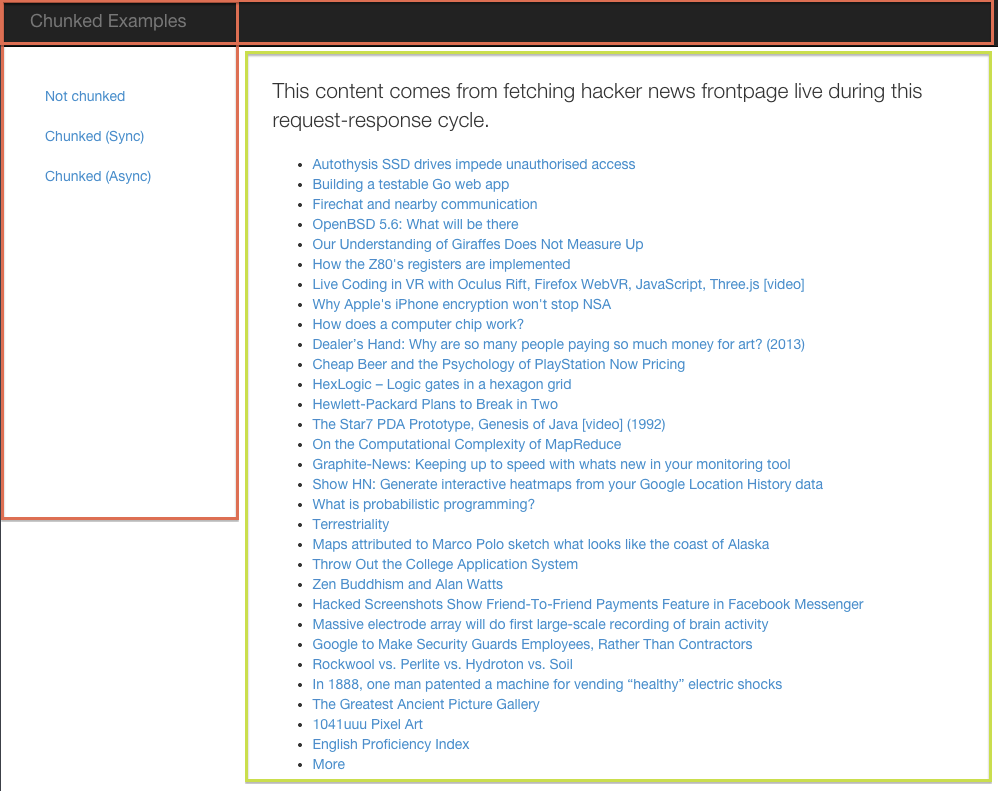
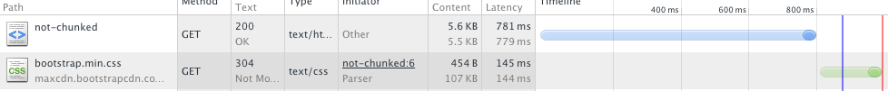
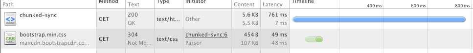

Faster rendering with Chunked Encoding
by @freekey
Example App
https://github.com/diegok/chunked-talk

Fetch & render
Fetch external content
Render full page

Chunked encoding
Send header and menu
Fetch external content
Render and send fetched data
Close page and response

Thanks!